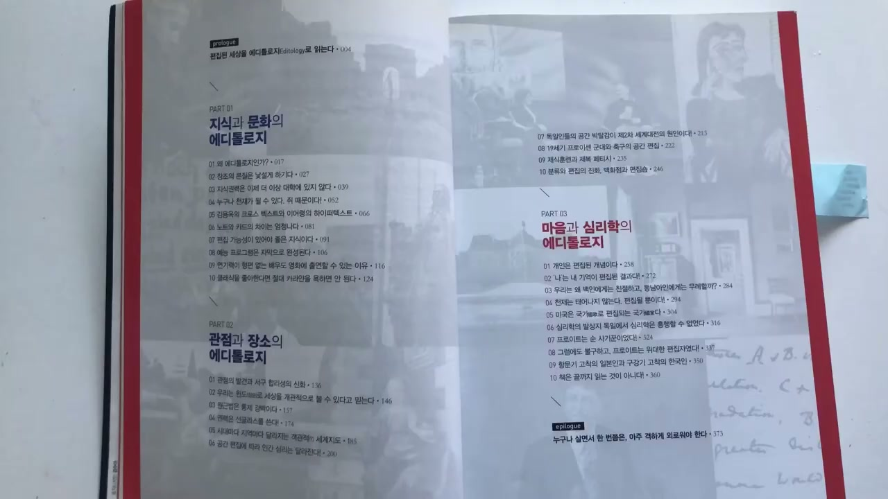
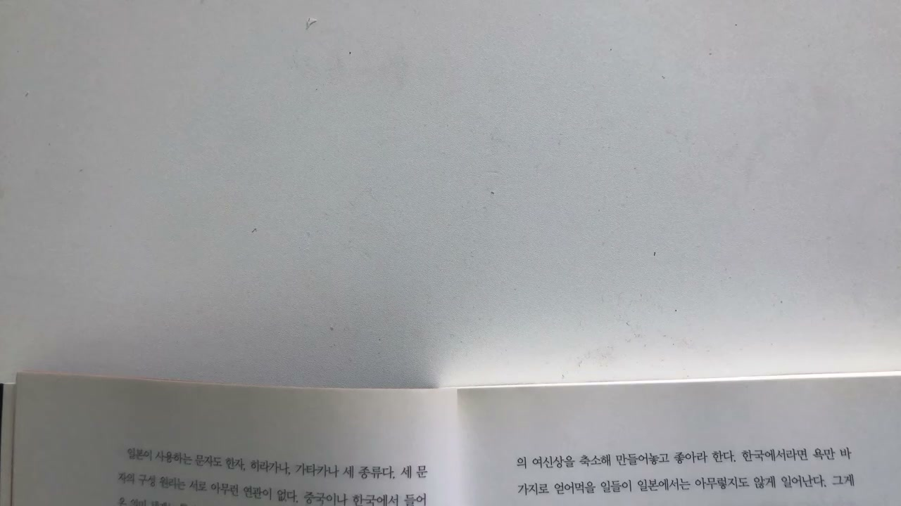
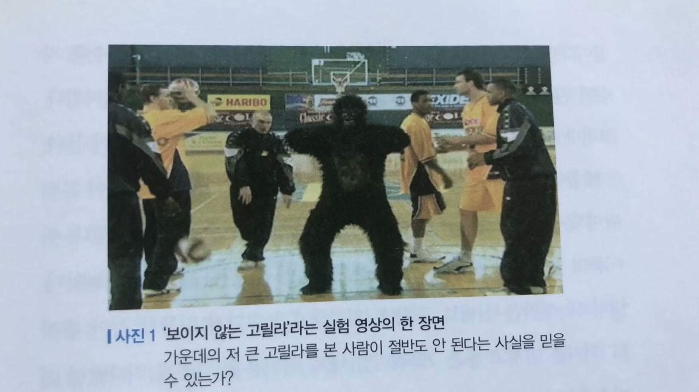
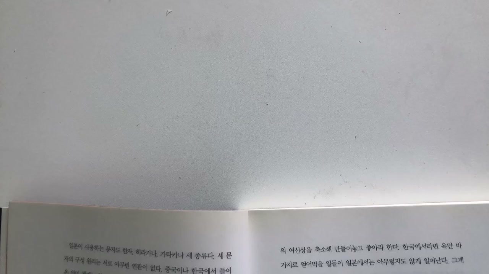
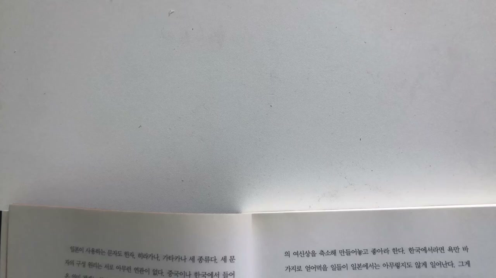
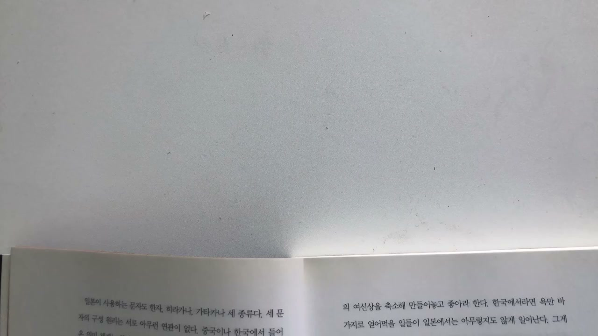
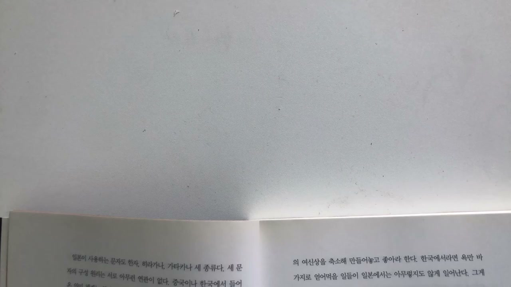
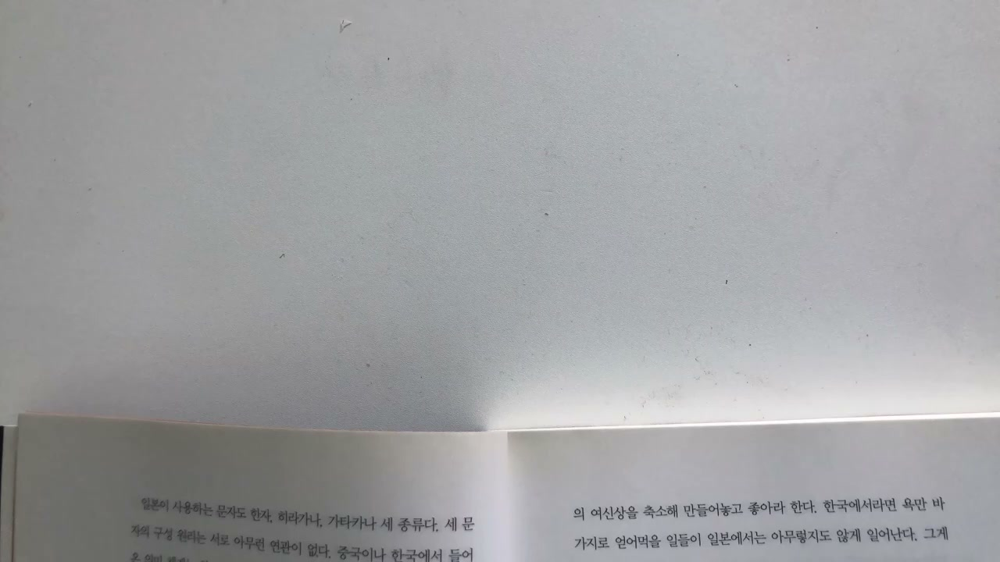
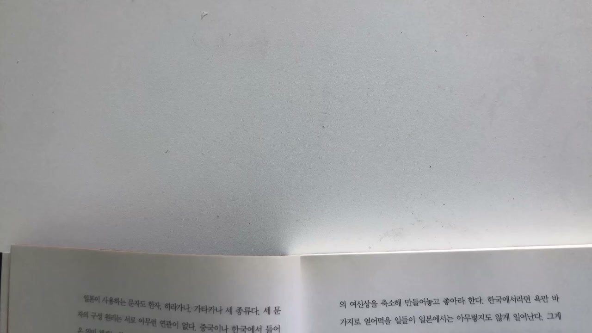
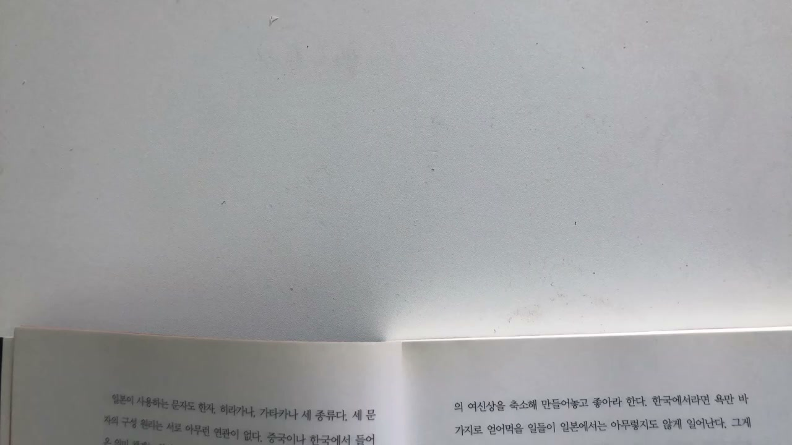

이 글은 전체 2편 중 1편입니다. 긴 영상을 주제 흐름에 맞춰 나누어 정리했습니다.
이 글은 전체 2편 중 1편입니다.
채널: 사슴책방 | 길이: 42:45 | 날짜: 2020-09-27

진행자는 사슴책방 인사 뒤 김정운의 《에디톨로지》를 소개한다. 책 제목의 “에디톨로지”는 저자가 직접 만든 말이기 때문에, 제목만 보았을 때는 어떤 내용을 다루는지 감이 잘 오지 않는다고 말한다. 반면 부제인 “창조는 편집이다”는 책 전체를 훨씬 명확하게 요약한다. 책은 2014년 10월 24일 초판이 나온 것으로 소개되고, 출판사는 21세기북스라고 언급된다.
저자 김정운은 문화심리학자이자 여러가지문제연구소장으로 소개된다. 그는 고려대학교 심리학과를 졸업하고 독일 베를린 자유대학교 심리학과에서 공부한 인물로 제시된다. 이 저자 소개는 책의 논지가 단순한 자기계발식 창의성론이 아니라 심리학, 문화론, 매체론, 지식사회론을 가로지르는 성격을 가진다는 점을 뒷받침한다.
목차 소개도 중요하다. 프롤로그는 “편집된 세상을 에디톨로지로 읽는다”는 방향을 제시하고, Part 1은 “지식과 문화의 에디톨로지”로 시작한다. 이 파트에는 “왜 에디톨로지인가?”, “창조의 본질은 낯설게 하기다”, “지식권력은 이제 더 이상 대학에 있지 않다”, “누구나 천재가 될 수 있다, 쥐 때문이다” 같은 장이 포함된다. 여기서 “쥐”는 동물이 아니라 컴퓨터 마우스를 뜻한다고 설명되어, 도구가 창조성과 지식 편집의 방식에 어떤 영향을 주는지가 암시된다.
목차에는 김용옥의 크로스텍스트와 이어령의 하이퍼텍스트, 노트와 카드의 차이, 예능 프로그램과 자막, 연기력이 부족한 배우가 영화에 출연할 수 있는 이유, 카라얀을 욕하면 안 되는 이유 같은 문화적 사례도 포함된다. 이어 Part 2는 관점과 장소, 원근법, 윈도우, 객관성, 권력, 지도, 공간 편집, 독일인의 공간 박탈감, 19세기 프로이센 군대와 축구, 제식훈련과 제복, 백화점과 편집숍으로 확장된다. Part 3은 마음과 심리학의 에디톨로지로, 개인과 기억, 백인과 동남아인에 대한 태도 차이, 천재, 미국, 독일 심리학, 프로이트, 일본인과 한국인의 심리적 고착, 책을 끝까지 읽지 않아도 된다는 주장까지 포괄한다. 즉 책은 “편집”을 지식 생산, 문화 감각, 권력, 공간, 심리, 사회질서 전체를 읽는 키워드로 사용한다.

영상의 본론은 “인간은 자기가 필요하다고 생각하는 것만 본다”는 명제에서 시작된다. 심리학에서는 이를 자극의 선택적 지각이라고 한다. 세상에는 감당할 수 없을 정도로 많은 자극이 존재하며, 인간의 인지 능력은 그 모든 자극을 동시에 처리할 만큼 넓지 않다. 그래서 인간은 어쩔 수 없이 필요한 자극만 받아들이도록 되어 있다.
하지만 문제는 “내가 필요하다고 생각하는 자극”의 내용이 지극히 편파적이라는 점이다. 우리는 중립적이고 객관적으로 세계를 보는 것처럼 느끼지만, 실제로는 이미 특정 관심과 욕망과 습관을 기준으로 세계를 선별한다. 이 선별 과정은 지식 구성의 첫 단계다. 어떤 자극을 받아들이느냐에 따라 이후 정보가 구성되고, 정보들이 결합해 만들어지는 지식의 성격도 달라진다.
창조적 인간과 보통 인간의 차이는 바로 이 단계에서 벌어진다. 창조적 인간은 남들이 지나치는 자극을 잡아챈다. 거창한 통찰이 먼저 있는 것이 아니라, 사소하고 평범한 장면에서 이상한 점을 느끼고 멈춰서는 능력이 먼저다. 위대한 창조는 그렇게 작고 사소한 자극을 붙잡는 데서 시작된다는 것이 이 부분의 핵심이다.
선택적 지각은 창조성의 조건이기도 하지만, 반대로 정신적 고통의 구조를 설명하기도 한다. 진행자는 우울증 환자가 자신을 둘러싼 자극 중 부정적인 것만 받아들이는 경향을 예로 든다. 자신에 관한 긍정적 자극은 건너뛰고, 부정적인 자극만 반복해서 보게 되는 것이다. 인터넷 악플을 보고 극단적인 생각까지 하게 되는 사례도 같은 맥락에서 제시된다.
이 과정은 단순히 “나쁜 것을 많이 봐서 기분이 나빠진다”는 수준이 아니다. 한 번 빠져들면 보지 않으면 또 불안해지고, 불안해서 다시 확인하고, 확인하면서 더 부정적인 자극에 빠지는 악순환이 생긴다. 선택적 지각이 특정 방향으로 굳어지면 세계 전체가 그 방향으로 편집된다. 우울한 사람에게 세계가 부정적으로 보이는 것은 세계 자체가 완전히 부정적이어서가 아니라, 지각의 편집 방식이 부정적 자극을 중심으로 조직되기 때문이다.
이 분석은 책의 큰 주제와도 맞닿아 있다. “나”라는 개인도 있는 그대로의 실체라기보다 내가 받아들인 자극, 기억, 해석, 감정이 편집된 결과다. 그러므로 창조적 편집과 병리적 편집은 완전히 다른 문제가 아니다. 둘 다 인간이 세계를 선택적으로 받아들이고 구성한다는 같은 구조 위에 서 있다.

선택적 지각의 반대편에는 무주의 맹시가 있다. 영어로 inattentional blindness라고 설명되며, 자기가 보고 싶은 것에만 집중하느라 정작 중요한 것을 놓치는 현상이다. 진행자는 이를 설명하기 위해 인지심리학에서 유명한 “보이지 않는 고릴라” 실험을 소개한다. 이 실험은 크리스토퍼 차브리스와 대니얼 사이먼스가 주장한 개념과 연결된다.
실험은 검은 옷을 입은 선수 3명과 노란 옷을 입은 선수 3명이 농구공을 주고받는 짧은 영상을 피험자에게 보여주는 방식으로 진행된다. 피험자에게는 노란 옷 선수들이 패스를 몇 번 하는지 정확히 세라고 지시한다. 정신없이 움직이는 선수들 사이에서 공의 움직임을 따라가는 일은 쉽지 않다. 그래서 참가자는 패스 횟수라는 과제에 강하게 집중한다.
진짜 실험은 바로 그때 시작된다. 선수들이 공을 주고받는 동안 커다란 고릴라가 오른쪽에서 천천히 나타나 화면 가운데로 걸어 나온다. 고릴라는 정면을 바라보며 가슴을 두드리고, 다시 왼쪽으로 걸어가 사라진다. 화면이 정지된 뒤 참가자에게 패스 횟수를 묻고, 이어 원래 의도했던 질문인 “고릴라를 보았느냐”를 묻는다.
결과는 놀랍다. 절반 이상의 사람들이 고릴라를 보지 못했다고 답한다. 패스 횟수를 세느라 화면 중앙에서 가슴을 두드리는 매우 큰 고릴라를 보지 못한 것이다. 이 실험은 세계 곳곳에서 반복되었고, 인종, 성별, 직종, 계층과 관계없이 매번 50% 이상이 고릴라를 보지 못했다는 결과가 언급된다.
보이지 않는 고릴라 실험에서 더 흥미로운 점은 기업 임원일수록 고릴라를 보지 못한다는 주장이다. 진행자는 사회적 지위가 높을수록, 장사가 잘될수록, 나이가 들수록 자신이 원하는 것만 보는 경향이 강해진다고 해석한다. 눈앞의 과제와 자신이 익숙한 판단 체계에만 집중하느라 세상이 어떻게 바뀌는지 모르게 된다는 것이다. 이는 단순히 실험 결과가 아니라 조직과 권력의 문제로 확장된다.
“고릴라를 보긴 했지만 못 봤다”는 말도 안 되는 일이 우리 주변에서는 빈번하게 일어난다. 이미 변화는 눈앞에 와 있지만, 우리는 그것을 의미 있는 변화로 해석하지 못한다. 눈앞의 과제, 매출, 지위, 기존 성공 공식에 집중하다 보면 변화의 본질을 놓친다. 그래서 높은 지위와 경험이 오히려 세계를 읽는 능력을 제한할 수 있다.
이 논지는 지식 구성의 첫 단계로 다시 연결된다. 자극을 받아들이는 것은 지식을 구성하는 최초 단계인데, 이 단계에서부터 선택적 지각과 무주의 맹시 같은 왜곡이 나타난다. 따라서 지식은 단순히 정보를 많이 쌓는 문제가 아니다. 어떤 자극을 볼 수 있고, 어떤 자극을 놓치며, 놓친 자극을 나중에 어떻게 해석하느냐의 문제다.
영상은 이후 창조와 창의성의 정의로 넘어간다. 오늘날 많은 사람들이 창조와 창의성을 말하지만, 보통은 “새로운 것을 생각해내는 특성” 정도로 정의한다. 진행자는 여기서 “도대체 새로운 것이 무엇인가”라고 되묻는다. 생전 듣도 보도 못한 것, 상상도 못한 것을 갑자기 머릿속에서 만들어내는 일이 과연 가능한가라는 질문이다.
답은 부정적이다. 세상에 완전히 새로운 것은 없으며, 다시 말해 해 아래 새로운 것은 없다는 입장이 제시된다. 인간의 생각이라는 인지 과정 자체가 이미 경험한 것, 어디선가 본 것, 들은 것, 저장해둔 것을 다시 떠올리는 방식으로 작동하기 때문이다. 따라서 완전히 경험 바깥의 것을 생각해내는 일은 불가능하다.
이 주장은 창의성을 낮춰보는 말이 아니다. 오히려 창의성을 더 현실적인 과정으로 이해하게 만든다. 창의성은 무에서 유를 만들어내는 신비로운 능력이 아니라, 이미 본 것들을 다른 방식으로 다시 불러오고 연결하는 능력이다. 이때 “다른 방식으로 본다”는 점이 중요해진다.

인지발달 심리학자 피아제는 생각의 본질을 표상, 즉 representation으로 설명한다. 진행자는 representation을 “다시 보여주다”라는 의미로 풀이한다. re는 반복 또는 다시를 뜻하고, presentation은 보여주는 일을 뜻하므로, 생각은 어딘가에서 한 번 본 것을 머릿속에 다시 보여주는 과정이 된다. 그래서 생각은 완전히 새로운 것을 창조하는 기능이 아니라, 경험된 것을 재현하고 재배열하는 기능이다.
이 논리는 어린아이의 발달 설명으로 이어진다. 아이가 언제부터 생각할 수 있느냐는 질문에 대해 피아제는 자연 모방이라는 개념을 끌어낸다. 자연 모방은 흉내를 내기는 하되 한참 지난 뒤에 하는 모방이다. 단순히 눈앞의 표정을 즉시 따라 하는 본능적 모방과는 다르다.
인간은 태어날 때부터 상대방의 표정이나 몸짓을 즉각 흉내내는 거울 뉴런을 갖고 태어난다고 설명된다. 이런 본능적 모방은 생존과 의사소통의 필수 조건이다. 상대의 정서를 흉내 내며 의사소통이 시작되기 때문이다. 그러나 생후 약 1년이 지나면 아이는 자연 모방 행동을 보이기 시작한다.
자연 모방은 언젠가 보았던 상대의 행동을 머릿속에 사진처럼 저장해두었다가 나중에 꺼내 모방하는 것이다. 이때부터 아이는 상징으로 매개되는 생각, 즉 표상이 가능해진다. 따라서 본격적인 인지 발달은 내적 표상을 꺼내 쓸 수 있는 시점부터 시작된다. 그 이전의 단계는 엄밀한 의미의 생각이라고 보기 어렵다고 설명된다.

생각의 본질이 이미 본 것을 다시 떠올리는 것이라면, 창의적 사고는 완전히 없는 것을 만드는 일이 아니다. 창의적 사고는 남들과 다른 방식으로 사물을 보는 데서 시작한다. 진행자는 매우 일상적이고 조금 난감한 예시를 든다. 발레 공연에서 남성 발레리노의 복장을 보며 왜 저런 복장을 해야 하는지, 그 난감함을 개그로 풀면 왜 무서운 것을 입었는지 같은 질문이 생길 수 있다는 것이다.
질문은 계속된다. 피겨스케이팅에서 여성 선수들은 왜 다리를 번쩍 치켜드는 자세를 반복하는가. 발레리나는 왜 치마가 위로 들린 형태의 의상을 입는가. 우리는 왜 그런 장면을 보며 음탕한 상상을 하지 않으려고 애쓰는가. 공연이 끝나면 왜 그것을 예술에 감동했다고 말하는가.
이런 질문들은 얼핏 사소하고 우스꽝스럽지만, 바로 이런 일상의 당연함에 대한 의심이 창조적 사고의 출발점이라고 설명된다. 이 모든 질문에 답하는 글을 쓰면 정신분석학적 미학과 관련된 창조적인 글이 될 수 있다. 중요한 것은 질문의 대상을 거창한 문제로 한정하지 않는 것이다. 누구나 그냥 지나치는 일상적 경험을 낯설게 바라볼 때 창조적 사유가 시작된다.
러시아 형식주의의 대표 이론가 쉬클롭스키는 이러한 창조의 원리를 “낯설게 하기”로 정의한다. 인간의 가장 창조적인 작업인 예술의 목적은 일상의 반복적 익숙함을 낯설게 만들어 새로운 느낌을 느끼게 하는 데 있다는 것이다. 익숙한 것은 감각되지 않는다. 너무 자주 반복되는 것은 의식되지 않고 자동화된다.
우리 삶이 힘든 이유도 같은 맥락에서 설명된다. 매일 똑같은 일이 반복되기 때문에 삶은 지루하고, 진부하고, 견디기 어려워진다. 아침마다 힘겹게 출근하고 끝없이 참고 인내하는 삶에는 그 자체로는 뚜렷한 출구가 보이지 않는다. 창조적이고 싶다면 무엇보다 그 지긋지긋한 삶을 낯설게 만들어야 한다.
따라서 예술은 장식이나 취미가 아니다. 우리 삶에 예술이 필요한 이유는 반복되는 일상을 다르게 감각하게 만들기 때문이다. 창조는 삶의 반복을 끊는 방식이고, 낯설게 하기는 그 반복을 새롭게 편집하는 기술이다. 이 대목에서 책의 부제 “창조는 편집이다”는 미학적 의미를 얻는다.

진행자는 종이신문을 보지 않는 요즘 세대를 문제 삼는 태도를 비판한다. 젊은 사람들이 종이신문을 읽지 않는다고 혀를 찬다면, 그 사람은 정말 늙은 것이라고 단호하게 말한다. 정보 획득 방식이 완전히 달라졌기 때문이다. 단지 매체가 바뀐 것이 아니라, 정보의 조합을 통해 얻어지는 지식의 성격 자체가 달라졌다.
새로운 방식으로 정보를 얻고 조합하는 세대가 구성해갈 미래는 이전과 전혀 다른 세상이 될 것이다. 마음에 들지 않아도 어쩔 수 없다. 미래주의는 기성세대의 것이 아니라 그들의 것이라고 설명된다. 트위터나 페이스북 같은 소셜 네트워크를 통해 정보가 공유되고 지식이 구성되는 방식은 이미 새로운 질서를 만들고 있다.
여기서 핵심은 정보의 양이 아니다. 정보는 이미 넘쳐난다. 중요한 것은 정보를 어떤 관계로 묶고, 어떤 맥락으로 편집해 지식으로 구성하느냐다. 이 변화는 책이 말하는 하이퍼텍스트 시대, 즉 텍스트가 선형적으로 읽히는 것이 아니라 연결망 속에서 재구성되는 시대의 특징이다.
스티브 잡스는 민주주의에는 자유롭고 건강한 언론이 중요하며, 뉴스를 모으고 편집하는 조직이 어느 때보다 중요하다는 취지의 주장을 한 것으로 소개된다. 그는 블로거들만의 세상이 되는 것을 원치 않는다고 했다고 설명된다. 진행자는 이 발언에서 편집자의 중요성을 읽어낸다. 과거 어느 때보다 편집자가 중요한 세상이 되었다는 것이다.
정보 자체가 권력이던 시대는 지나갔다. 더 이상 정보 독점은 불가능하다. 검색하면 정보가 나오고, 네트워크를 통해 정보가 순식간에 공유되기 때문이다. 이제 권력은 정보를 얼마나 갖고 있느냐가 아니라, 정보를 어떻게 엮어내느냐에 달려 있다.
인터넷 주소의 www, 즉 World Wide Web은 이 변화를 상징한다. 말 그대로 세계의 모든 지식이 그물망처럼 얽혀 있다는 뜻이다. 이 그물망에는 계통적으로 체계화된 지식 권력이 처음부터 정돈된 형태로 존재하지 않는다. 특정 마디를 강하게 누르고 연결을 만들어낼 때 비로소 권력의 중심이 생긴다. 몇 개의 지식이 경쟁할 때, 그물의 마디를 더 강하게 누르는 쪽으로 권력이 몰리고, 그 중심을 기준으로 지식들이 다시 편집되어 하나의 시스템을 이룬다.

편집의 시대에는 지식인이나 천재의 개념도 달라진다. 예전에는 많이 알고 정확히 아는 사람이 지식인이었다. 남들이 상상할 수 없을 정도의 정보를 외우고 있으면 천재 대접을 받을 수 있었다. 그러나 오늘날에는 검색하면 정보가 나오기 때문에, 정보를 많이 알고 있다는 사실 자체가 지식인의 조건이 되지 않는다.
오늘날의 지식인은 정보와 정보의 관계를 잘 엮어내는 사람이다. 천재는 정보와 정보의 관계를 남들과 전혀 다른 방식으로 엮어내는 사람이다. 이는 지식이 암기에서 편집으로 이동했다는 뜻이다. 대학의 권위, 논문, 학위, 제도권 교육이 여전히 중요하더라도, 그것만이 지식 생산의 유일한 통로는 아니게 되었다.
이 변화는 기존 지식 권력자들에게 큰 충격을 준다. 과거 대학은 지식 권력의 중심이었지만, 인터넷과 하이퍼텍스트 환경에서는 지식 편집의 권력이 이동한다. 지식은 수시로, 아주 빠르게 바뀐다. 이런 속도와 연결성을 기존 대학 중심 체계가 모두 통제하기는 어렵다.

지식 편집 권력의 이동 사례로 미네르바 사건이 소개된다. 2008년 미국 서브프라임 모기지 사태로 인해 한국에도 경제 위기가 닥칠 것이라는 경고 글이 인터넷에 퍼지기 시작했다. 당시 교수와 경제 전문가들은 대체로 그 글을 대수롭지 않게 여겼다. 그러나 시간이 지나며 사람들은 경제 전문가들의 분석보다 미네르바의 예언을 더 믿기 시작했다.
미네르바라는 필명으로 올라온 글은 환율 변동, 주가 변화, 경제 상황에 관한 예측을 담고 있었고, 실제 상황과 절묘하게 맞아떨어지는 것으로 받아들여졌다. 그의 예언이 현실이 될 때마다 사람들은 열광했다. 사람들은 그의 정체를 이름을 밝히지 않은 대학교수나 유명 경제연구소 연구원으로 추측했다. 남의 칭찬에 인색한 대학교수들조차 그를 최고의 경제 전문가로 극찬했다는 설명도 이어진다.
미네르바의 주장에 대한 사회적 반향이 커지자 국가 경제를 책임지는 기획재정부 장관까지 반론을 제기했다. 정체를 밝히지 않고 공식 지식 권력 체계를 계속 비판하던 미네르바를 국가는 더 이상 인내하지 못했다. 결국 그는 허위사실 유포라는 황당한 혐의로 체포되었다고 설명된다. 그러나 사건은 체포로 끝나지 않고 더 큰 충격을 낳았다.
그의 정체는 대단한 경제 전문가도, 교수도 아니었다. 전문대 출신의 무직자였다는 사실이 알려졌고, 사람들은 그 점에 더 큰 충격을 받았다. 진행자는 충격의 핵심이 “그가 어떻게 그렇게 정확하게 예측했는가”가 아니라 “그가 전문대 졸업자였다는 사실”이었다고 해석한다. 사람들은 제도권 밖의 인물이 훌륭한 지식을 가질 수 있다는 사실을 도무지 인정하지 못했다.
미네르바 자신은 인터넷에 있는 지식을 짜깁기했을 뿐이라고 설명했다. 그러나 진행자는 그것이 단순한 짜깁기가 아니었다고 본다. 실제 경제 현실에 적용되고 검증된 정당한 지식 편집이었다는 것이다. 대학에서 인정하는 논문과 학위 시스템에서만 가능하다고 여겨졌던 지식 편집이 이제 인터넷에서도 가능해졌다는 사실을 미네르바 사건이 보여준다고 정리된다.

미네르바 사건은 하이퍼텍스트 시대가 시작되었음을 보여주는 사례로 해석된다. 에디톨로지에 기초한 하이퍼텍스트 시대, 즉 연결된 텍스트의 시대가 열린 것이다. 이 시대에는 지식이 한 방향으로 배열된 책이나 논문 안에만 머무르지 않는다. 정보들이 링크와 검색과 공유를 통해 끊임없이 재배열된다.
진행자는 인간의 의식과 행동은 도구에 의해 매개된다고 설명한다. 숟가락을 들면 뜨게 되고, 젓가락을 들면 집게 되고, 포크를 잡으면 찌르게 되고, 나이프를 들면 자르게 된다. 평생 하루 세 번씩 뜨고 집는 행위를 반복하는 사람과 찌르고 자르는 행위를 반복하는 사람의 의식은 질적으로 다를 수밖에 없다고 말한다. 서양인이 동양인보다 훨씬 공격적이라는 주장도 이 맥락에서 언급된다.
이것은 농담이 아니라 인간의 생각이 사용하는 도구로 매개된다는 주장이다. 구소련 심리학자 레온티예프의 활동이론도 인간의 심리와 행위가 물질적 맥락에 따라 형성된다는 관점을 제시한 것으로 연결된다. 종이와 텍스트 역시 마찬가지다. 종이와 텍스트는 인간 의식의 혁명적 발전을 가능하게 했지만, 수천 년이 지난 오늘날에는 새로운 세계로의 전환을 막는 장애물이 되기도 한다.
종이 위에 써야 하는 텍스트는 공간적 범위가 제한된다. 아무리 넓어도 A4 용지 크기를 크게 벗어나기 어렵다. 인간은 그 종이 크기의 한계에 맞추어 생각을 전개하게 된다. 또한 종이 위 글쓰기는 좌에서 우로, 혹은 우에서 좌로, 위에서 아래로 순서대로 써나가야 한다.
이러한 텍스트의 2차원적 한계는 종이라는 매체를 버리기 전에는 극복하기 어렵다. 진행자는 자신의 다이어리 경험으로 이를 설명한다. 매일 자기 전에 다이어리를 쓰지만, 글씨를 쓸 수 있는 칸이 충분히 크지 않아 쓰고 싶은 모든 말을 쓸 수 없다고 말한다. 적을 수 있는 공간 자체가 작으니 떠오르는 생각을 모두 기록할 수 없다.
이 제한은 단점만 있는 것은 아니다. 작은 칸에 맞춰 쓰다 보니 추려내고 요약하는 습관이 생겼고, 더 간결하고 명확하게 쓰는 연습도 가능해졌다고 말한다. 즉 도구에는 장단점이 모두 있다. 중요한 것은 도구가 중립적이지 않다는 점이다. 도구의 크기, 배열, 물리적 형식이 생각의 모양과 범위를 결정한다.

책은 텍스트의 한계가 타자기라는 매체 때문에 더욱 치명적이 되었다고 설명한다. 인류가 손글씨를 포기하고 타자기를 쓰기 시작한 것은 객관성과 정확성의 문제와 관련된다. 타자기는 손글씨의 개별성을 과감하게 포기한다. 누구의 글씨인지, 어떤 손의 흔적인지 드러나는 개별성을 줄이고, 표준화된 문자 생산을 가능하게 한다.
시간이 흘러 컴퓨터가 일상화되면서 타자기도 사라지고 타이피스트도 사라졌다. 그러나 타자기가 숙명적으로 갖고 있던 문제는 여전히 남아 있다. 그것이 바로 QWERTY 자판 배열의 문제다. QWERTY는 숫자 아래 두 번째 줄 왼쪽에서부터 qwerty로 시작되기 때문에 붙은 이름이다.
QWERTY 자판 배열은 전혀 합리적이지 않다고 설명된다. 타자기 시절에는 자주 쓰는 글쇠가 올라갔다 내려오면서 서로 엉키는 문제가 있었기 때문에, 많이 쓰는 자판일수록 일부러 멀리 떨어뜨려 놓았다. 즉 효율을 위해 설계된 배열이 아니라, 기계적 충돌을 막기 위한 제약의 산물이었다. 그러나 현대 컴퓨터 키보드에서는 글쇠가 물리적으로 엉키는 일이 없다.
그런데도 150여 년 전 개발된 타자기식 배열을 지금도 그대로 사용하고 있다. 이는 과거 도구의 제약이 현재의 사고와 행동 방식에 계속 남아 있는 대표적 사례다. 가장 많이 쓰는 기능은 가장 자주 쓰는 손가락으로 누르도록 하는 것이 상식이지만, 실제 도구는 과거의 관성 때문에 반드시 합리적으로 구성되어 있지 않다. 이 대목은 2편에서 이어질 도구, 마우스, 하이퍼텍스트, 편집 방식의 변화 논의로 연결된다.
발언 요지: 창조는 아무것도 없는 곳에서 무언가를 만드는 일이 아니라, 이미 존재하는 것을 새롭게 편집하는 일이다.
발언 요지: 인간은 세상의 모든 자극을 보지 못하고, 자신이 필요하다고 여기는 자극만 선택해 받아들인다.
발언 요지: 창조적 인간은 남들이 지나치는 사소한 자극을 붙잡는 사람이다.
발언 요지: 보이지 않는 고릴라 실험은 우리가 보고도 보지 못하는 일이 얼마나 흔한지를 보여준다.
발언 요지: 사회적 지위가 높고 성공 경험이 많을수록 자신이 원하는 것만 보느라 변화의 신호를 놓칠 수 있다.
발언 요지: 완전히 새로운 것은 없다. 생각은 한 번 본 것을 다시 떠올리고 다르게 연결하는 과정이다.
발언 요지: 창조적 사고는 일상의 당연한 경험을 의심하는 데서 시작된다.
발언 요지: 예술은 반복되는 익숙함을 낯설게 만들어 삶을 새롭게 감각하게 한다.
발언 요지: 정보가 넘쳐나는 시대에는 정보를 많이 아는 사람이 아니라 정보 관계를 잘 엮는 사람이 지식인이다.
발언 요지: 미네르바 사건은 대학 밖에서도 정당한 지식 편집이 가능하다는 사실을 드러냈다.
발언 요지: 인간의 생각과 행동은 사용하는 도구에 의해 매개된다.
발언 요지: 종이, 타자기, 키보드 같은 도구의 형식은 생각의 범위와 방식까지 결정한다.
이 1편의 핵심 메시지는 창조성이 특별한 사람에게만 주어진 신비한 능력이 아니라는 점이다. 창조는 자극을 다르게 선택하고, 정보를 다르게 연결하고, 익숙한 것을 낯설게 만드는 편집 행위다. 인간은 애초에 세계를 있는 그대로 받아들이지 못하며, 언제나 선택적으로 보고 선택적으로 놓친다. 따라서 창조적 사고는 더 많이 보는 능력이라기보다, 남들이 못 보거나 보아도 의미를 주지 않는 자극을 포착하는 능력이다.
또 하나의 중요한 시사점은 지식 권력의 이동이다. 정보가 부족한 시대에는 많이 아는 사람이 지식인이었지만, 정보가 넘쳐나는 시대에는 정보를 엮어내는 사람이 지식인이다. 대학, 논문, 종이신문, 제도권 전문가가 지식 생산을 독점하던 시대는 약해지고 있다. 미네르바 사건은 그 변화가 얼마나 충격적으로 받아들여졌는지를 보여주는 사례다.
마지막으로, 영상은 도구가 사고를 만든다는 점을 강조한다. 종이는 생각을 2차원 공간과 선형적 순서 안에 가두고, 타자기와 키보드는 과거 기계적 제약의 흔적을 현재의 입력 방식에 남긴다. 도구는 단순한 수단이 아니라 인간의 의식과 행위와 지식 편집 방식을 매개한다. 2편에서는 이 논지가 이어져 마우스, 하이퍼텍스트, 디지털 환경 속 편집 능력의 문제로 더 확장될 가능성이 크다.
댓글
GitHub 이슈 기반 댓글 시스템입니다.